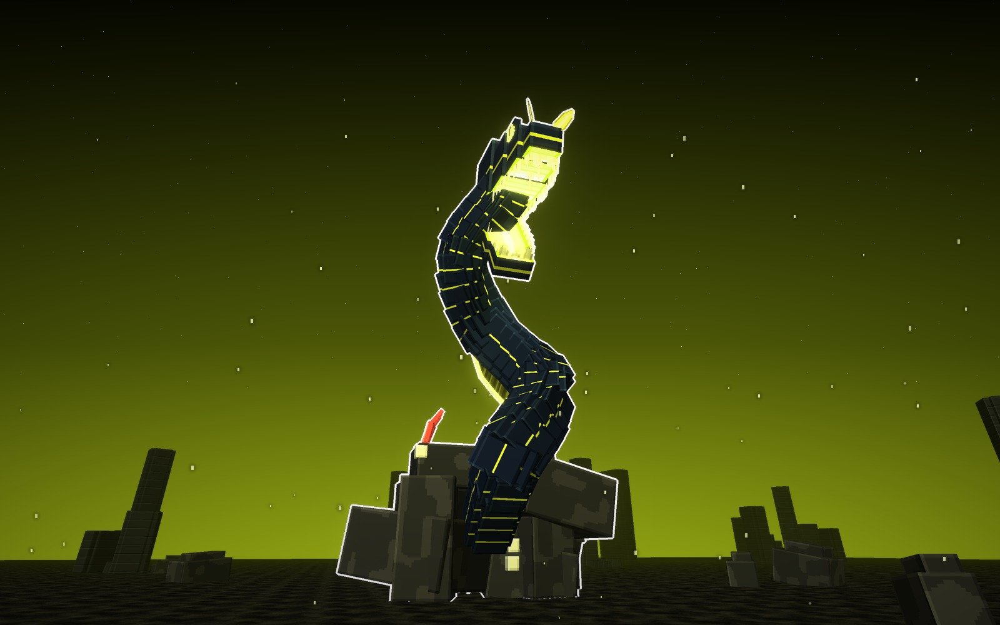
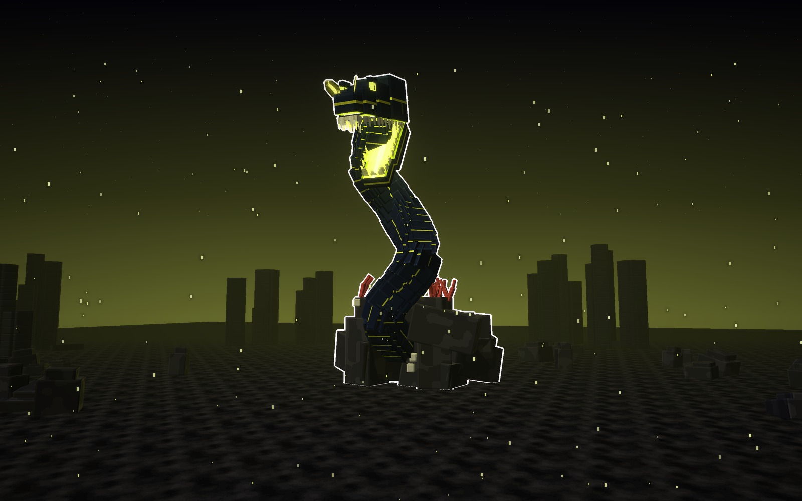
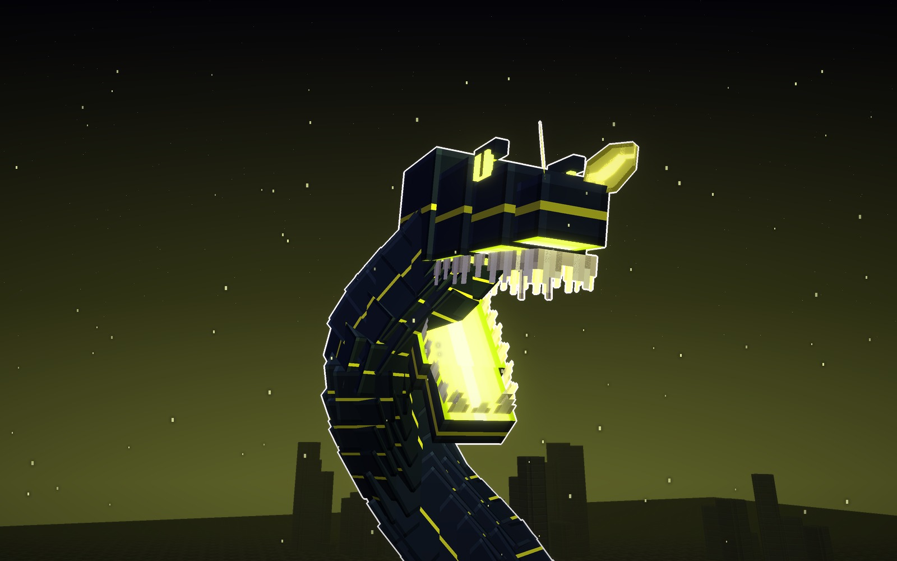
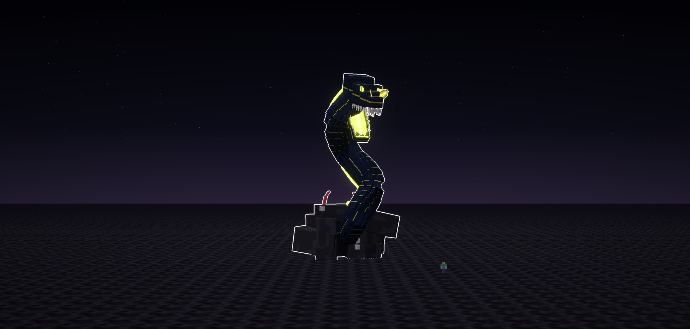
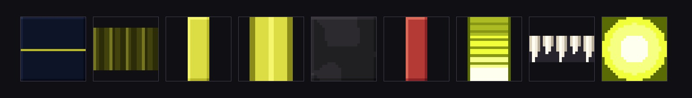

Atalaya · jefe · ficha de diseño · 14-10-2026
Murena
Murena, la Morena del Arrecife: una morena cinta colosal, larga y fina, que sale de su guarida de
roca y se alza en una ese muy alta hacia quien se acerca, con las fauces abiertas que arden por dentro.
Azul noche y limón.
Salió de tu idea: «sus morenas, puedes hacer un boss tipo morena». Es la Cinta, la opción que elegiste.
- La cabeza manda: alta y larga, con la nuca en joroba, las fauces abiertas, el paladar encendido en escalones, los
dientes dibujados en hoja, dos colmillos en el centro del paladar y el núcleo al fondo de la garganta.
- Las narices se abren como hojas en la punta del hocico, como las de la morena cinta de verdad.
- La aleta del lomo le corre de la nuca a la cueva, alta, en bandas, con el canto encendido.
- La guarida es parte del jefe: una roca con la boca de la cueva, percebes y coral rojo.
Cómo es Murena
La morena
- El cuerpo es largo, fino y aplastado de lado, sin escamas, azul noche, con una veta limón que brilla a lo
largo.
- Los ojos son pequeños y encendidos, arriba y cerca del hocico. Detrás de la boca tiene el agujero de la
agalla.
- Las fauces llevan los dientes en hoja por los bordes y el suelo de la boca encendido.
Las texturas
- La piel es lisa, con la veta.
- La aleta va en bandas, con los radios claros.
- La roca va en manchas grandes y limpias.
- Solo arden las fauces, los ojos, la veta y el canto de la aleta.
la Cinta · azul noche y limón
De cuerpo entero y de cerca


Su forma
- Cuerpo
- una ese muy alta
- Narices
- dos hojas en el hocico
- Aleta
- alta, con el canto encendido
- Luz
- limón
Señas
- La que muerde desde arriba.
- Mide 35 bloques de alto y 31 de largo.
piel
veta
aleta
luz
A escala
Murena con un jugador delante (1,8 bloques).

Los materiales
Las texturas a píxel grande, sin letras. De izquierda a derecha van: la piel con su veta, la aleta, el hueso,
la nariz en hoja, la roca de la guarida, el coral, el paladar, los dientes y el núcleo.

Veredicto de Juan
14-10-2026. De la primera ficha (la Dragona, la Cinta y la Gigante): «me gusta la opción B, de esa hagamos 3 tipos de
diseños». De la segunda (la Cinta, la Trenza y la del Velo): «en Murena solo deja la opción 1 y quita la mini serpiente
de su boca, haz eso y solo guarda esa opción». La segunda mandíbula que le salía de la garganta se quitó.
Bocetos: materiales/generadores/murena_modelo.py y murena_escenas.py (y jefa_modelo.py, del que toma los tubos de
bloques).